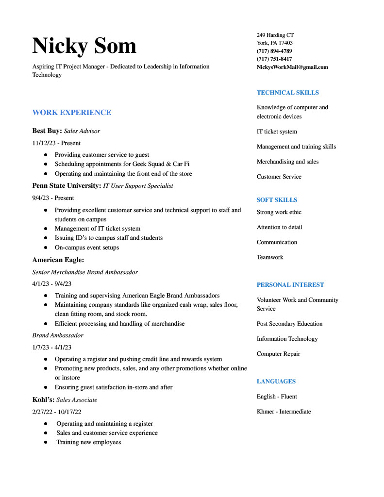

Hello there! My name is Nicky and I am a Penn State student with a passion for Information Technology. My career aspirations are to become an IT manager and potentially a post-secondary education teacher. Over the course of two years, I have gained valuable retail experience, starting at Kohl's and then most recently at American Eagle in the York Galleria. It has taught me the importance of customer service, sales, merchandising, management, and teamwork. I am currently excited to share that I have started a new position as a Penn State IT Support Specialist. I assist with any technical issues staff and students are facing on campus, issuing new ID cards, managing our ticket system, and helping to handle on-campus events. I love keeping up with the latest tech, learning new hobbies, and learning new things. Feel free to reach out to me to connect or with any questions!
My Professional Work Experience
Feel free to reach out to me!